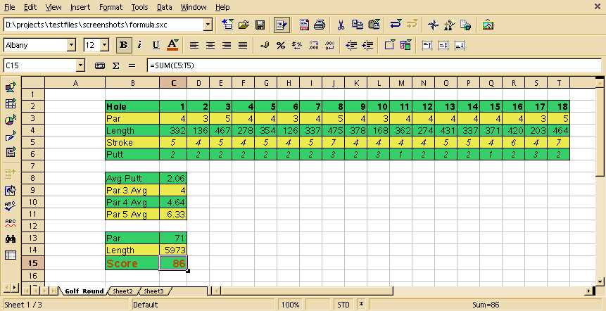
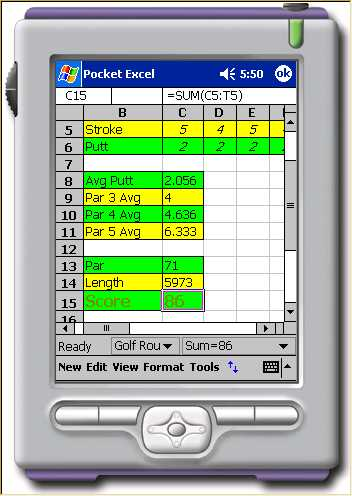

Features
In addition to basic text and number conversion there are two main
categories of features supported in this converter. Below is a simple
table outlining the two categories and the features they support.
Summary of Supported Features
| Category |
Features Supported
|
| Formula |
|
|
Cell
References
|
|
Add/Sub/Multiply/Divide
|
|
Integers
+ Floating Points
|
|
Functions
|
|
Name
Definitions
|
| Formatting |
|
|
Font
|
|
Bold,
Italic, Underline |
|
Colour
|
|
Alignment
(Horizontal & Vertical)
|
The first is formula features. In Pocket Excel like most other
spreadsheet applications any cell that starts with an "=" is considered
to be a formula. This formula is made up of operands and operators. In
addition to simple operators (such as addition,
subtraction,multiplication and division) this converter also supports
the 140 function operators available in pocket excel. StarCalc has of
course many more functions than this but in the case where a sxc
document has functions not supported in pocket excel the cell containing
them is converted to an error cell in the pocket excel document.
Operand support includes numbers, cell references (absolute, relative,
3D and cell ranges) and name definitions.
The second set of features supported in this converter relate to cell
formatting. All the basic formatting is supported in this converter. The
following is a list of these features
- Bold, Italic and Underline,
- Colour (background and foreground)
- Alignment (Horizontal & Vertical)
- Font
- Row and Column Width
- Borders
- Windows freezes and Splits
ScreenShots
Below are some screenshots to highlight the conversion capability of
this filter.
StarCalc view of a spreadsheet

Pocket Excel view of the converted file

To Do
I would divide this ToDo list into two categories. The first would be
features which are already support but could be done better. These I
think should include.
- Handling of unsupported functions
The second area are features that are not yet implemented
- Number Formatting
- Merge cells
Building the plugin
The Pocket Excel plugin is built as part of the XMerge framework.
Its classes are stored in
pexcel.jar. See
Building XMerge for more instructions.